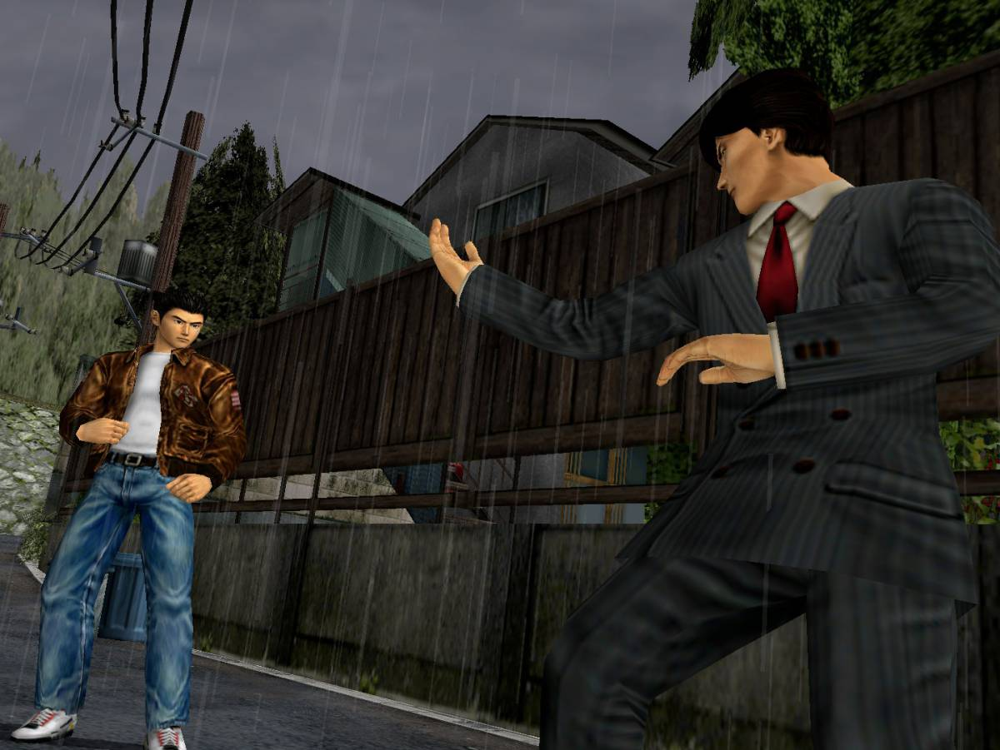
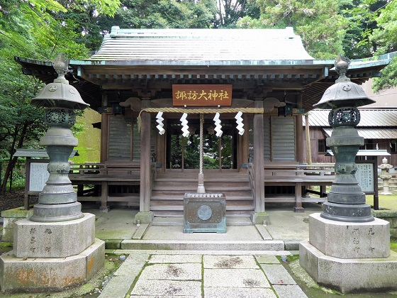

Viaja por las callecitas de Yamanose por el Japón de los 80,
con el encanto de la época en la épica bùsqueda de la venganza y de los Espejos.
Trabaja en Dobuita para poder viajar hasta la misteriosa China.
FOTOS

Tras los pasos de Lan Di..desde la gran ciudad hongkongniana hasta barrios más oscuros y sombríos,
llegando a zonas de campo donde nos espera Shenhua..y los Espejos?
Por fin podremos seguir construyendo historia...LA HISTORIA!!!

Por fin podremos seguir construyendo historia...LA HISTORIA!!!

Por fin podremos seguir construyendo historia...LA HISTORIA!!!
JuanKy
INICIO,